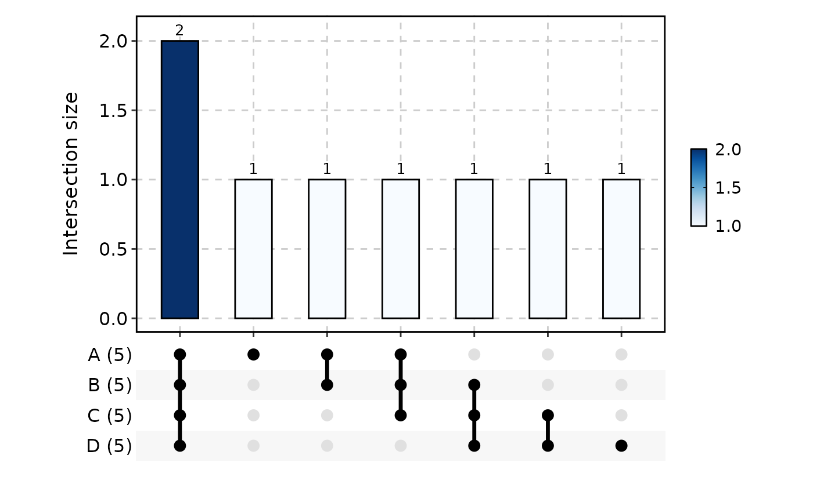
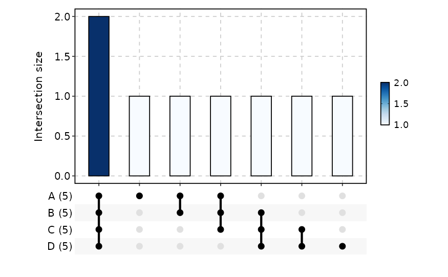
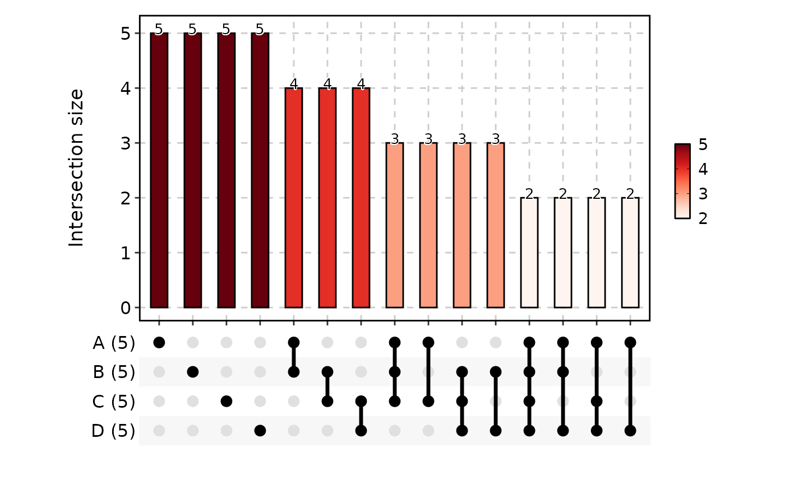
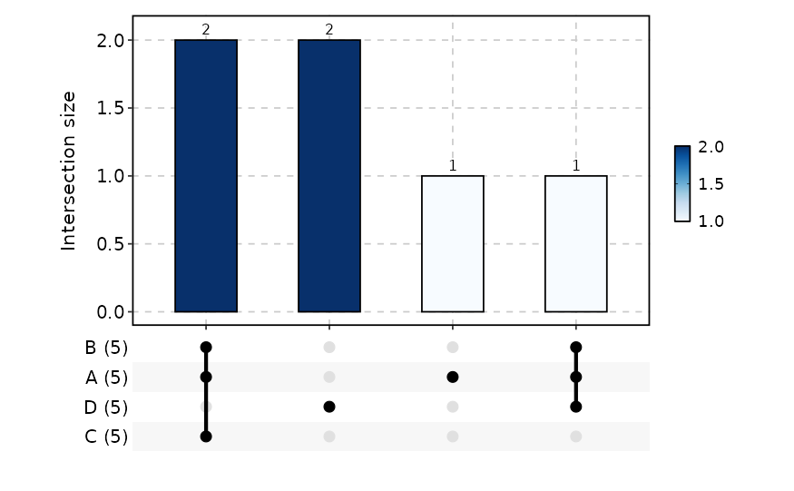

Draws an UpSet plot visualising set intersections and set sizes. The plot comprises:
A horizontal bar chart showing the size of each intersection, filled by the intersection count.
A combination matrix (rows = sets, columns = intersections) with membership dots and connecting lines.
A set-size bar chart on the left of the matrix (added automatically by
ggupset).
The function accepts data in four formats:
List — a named list of element vectors (one per set).
Long — a data frame with one row per (set, element) pair.
Wide — a data frame where each row is an element and each set has its own logical or 0/1 membership column.
UpsetPlotData — a pre-processed object from
prepare_upset_data().
Supports splitting into sub-plots via split_by, per-split colour
palettes and legend control, and combining sub-plots via patchwork.
Usage
UpsetPlot(
data,
in_form = c("auto", "long", "wide", "list", "upset"),
split_by = NULL,
split_by_sep = "_",
group_by = NULL,
group_by_sep = "_",
id_by = NULL,
label = TRUE,
label_fg = "black",
label_size = NULL,
label_bg = "white",
label_bg_r = 0.1,
palette = "Blues",
palcolor = NULL,
palreverse = FALSE,
alpha = 1,
specific = TRUE,
theme = "theme_this",
theme_args = list(),
title = NULL,
subtitle = NULL,
xlab = NULL,
ylab = NULL,
aspect.ratio = 0.6,
legend.position = "right",
legend.direction = "vertical",
combine = TRUE,
nrow = NULL,
ncol = NULL,
byrow = TRUE,
seed = 8525,
combmatrix_gap = 6,
axes = NULL,
axis_titles = axes,
guides = NULL,
design = NULL,
...
)Arguments
- data
A data frame.
- in_form
A character string specifying the input format. One of
"auto"(default; detect fromdatastructure),"long","wide","list", or"upset".- split_by
The column(s) to split the data by and produce separate sub-plots. Only supported for
data.frameinput (list input raises an error). Multiple columns concatenated withsplit_by_sep.- split_by_sep
A character string to separate concatenated
split_bycolumns. Default:"_".- group_by
Columns to group the data for plotting For those plotting functions that do not support multiple groups, They will be concatenated into one column, using
group_by_sepas the separator- group_by_sep
The separator for multiple group_by columns. See
group_by- id_by
A character string specifying the column name for instance identifiers. Required for long format; optional for wide format (a synthetic
.idcolumn is created if omitted).- label
A logical value. When
TRUE(default), count labels are displayed above each intersection bar viageom_text_repel().- label_fg
A character string specifying the colour of the label text. Default:
"black".- label_size
A numeric value specifying the size of the label text. Default:
NULL(computed frombase_size / 12 * 3.5).- label_bg
A character string specifying the background fill colour of the label. Default:
"white".- label_bg_r
A numeric value specifying the corner radius of the label background, passed to
geom_text_repel(bg.r). Default:0.1.- palette
A character string specifying the palette to use. A named list or vector can be used to specify the palettes for different
split_byvalues.- palcolor
A character string specifying the color to use in the palette. A named list can be used to specify the colors for different
split_byvalues. If some values are missing, the values from the palette will be used (palcolor will be NULL for those values).- palreverse
A logical value indicating whether to reverse the palette. Default is FALSE.
- alpha
A numeric value specifying the transparency of the plot.
- specific
A logical value. When
TRUE(default), only specific intersections are returned (elements belonging exclusively to the shown set combination). WhenFALSE, all overlapping items are included. See https://github.com/gaospecial/ggVennDiagram/issues/64.- theme
A character string or a theme class (i.e. ggplot2::theme_classic) specifying the theme to use. Default is "theme_this".
- theme_args
A list of arguments to pass to the theme function.
- title
A character string specifying the title of the plot. A function can be used to generate the title based on the default title. This is useful when split_by is used and the title needs to be dynamic.
- subtitle
A character string specifying the subtitle of the plot.
- xlab
A character string specifying the x-axis label.
- ylab
A character string specifying the y-axis label.
- aspect.ratio
A numeric value specifying the aspect ratio of the plot.
- legend.position
A character string specifying the position of the legend. if
waiver(), for single groups, the legend will be "none", otherwise "right".- legend.direction
A character string specifying the direction of the legend.
- combine
Logical; when
TRUE(default), returns a combinedpatchworkobject. WhenFALSE, returns a named list of individualggplotobjects.- ncol, nrow
Integer number of columns / rows for the combined layout (passed to
wrap_plots).- byrow
Logical; fill the combined layout by row. Default
TRUE(passed towrap_plots).- seed
A numeric seed for reproducibility. Passed to
validate_common_args(). Default:8525.- combmatrix_gap
A numeric value specifying the gap between rows of the combination matrix, measured at
base_size = 12. The actual gap is scaled bytext_size_scale = base_size / 12. Default:6.- axes
A character string specifying how axes should be treated across the combined layout (passed to
wrap_plots).- axis_titles
A character string specifying how axis titles should be treated across the combined layout. Defaults to
axes.- guides
A character string specifying how legends should be collected across panels (passed to
combine_plots()).- design
A custom layout design for the combined plot (passed to
combine_plots()).- ...
Additional arguments.
Value
A ggplot object, a patchwork object, or a named list
of ggplot objects (when combine = FALSE), each with
height and width attributes in inches.
split_by Workflow
When split_by is provided:
Guard —
split_byis only supported fordata.frameinput. Ifdatais a list (or other non-data.frame type) andsplit_byis non-NULL, an error is raised.Column validation —
check_columns()resolves thesplit_bycolumn(s) withforce_factor = TRUEandallow_multi = TRUE. Multiple columns are concatenated withsplit_by_sep.Data splitting — empty factor levels in
split_byare dropped viadroplevels(), then the data frame is split bysplit_by(level order is preserved). Ifsplit_byisNULL, the data is wrapped in a single-element list with name"...".Per-split resolution —
check_palette(),check_palcolor(), andcheck_legend()resolve per-splitpalette,palcolor,legend.position, andlegend.direction.Atomic dispatch —
UpsetPlotAtomicis called for each split. Iftitleis a function, it receives the split level name and can generate dynamic titles. When in wide mode (in_formis"auto"or"wide") andgroup_byisNULL, the set columns are auto-detected as all columns exceptid_byandsplit_by.Combination — Results are combined via
combine_plots()(whencombine = TRUE) or returned as a named list.
Examples
# \donttest{
# ---- list input -------------------------------------------------------
data <- list(
A = 1:5,
B = 2:6,
C = 3:7,
D = 4:8
)
UpsetPlot(data)

UpsetPlot(data, label = FALSE)

UpsetPlot(data, palette = "Reds", specific = FALSE)

# ---- long-format data frame ------------------------------------------
data_long <- data.frame(
group_by = factor(
c(rep("A", 5), rep("B", 5), rep("C", 5), rep("D", 5)),
levels = c("A", "B", "C", "D")
),
id_by = c(1:5, 2:6, 3:7, 4:8)
)
UpsetPlot(data_long, in_form = "long", group_by = "group_by", id_by = "id_by")
 # ---- wide-format data frame ------------------------------------------
data <- data.frame(
id = LETTERS[1:10],
B = c(1, 0, 1, 1, 0, 0, 1, 0, 1, 0),
A = c(1, 1, 1, 0, 0, 1, 0, 0, 1, 0),
D = c(1, 0, 0, 1, 1, 0, 0, 1, 0, 1),
C = c(0, 1, 1, 0, 1, 0, 1, 0, 1, 0)
)
UpsetPlot(data, in_form = "wide", id_by = "id", n_intersections = 4)
#> Warning: Removed 4 rows containing non-finite outside the scale range (`stat_count()`).
#> Warning: Removed 4 rows containing non-finite outside the scale range (`stat_count()`).
# ---- wide-format data frame ------------------------------------------
data <- data.frame(
id = LETTERS[1:10],
B = c(1, 0, 1, 1, 0, 0, 1, 0, 1, 0),
A = c(1, 1, 1, 0, 0, 1, 0, 0, 1, 0),
D = c(1, 0, 0, 1, 1, 0, 0, 1, 0, 1),
C = c(0, 1, 1, 0, 1, 0, 1, 0, 1, 0)
)
UpsetPlot(data, in_form = "wide", id_by = "id", n_intersections = 4)
#> Warning: Removed 4 rows containing non-finite outside the scale range (`stat_count()`).
#> Warning: Removed 4 rows containing non-finite outside the scale range (`stat_count()`).

# }